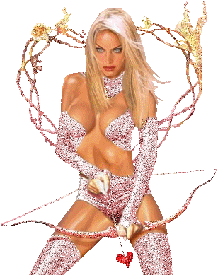
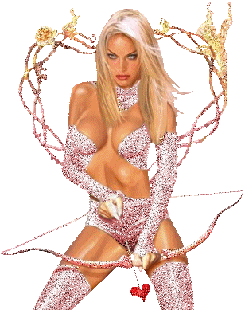
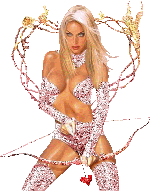

THE TWENTY-SEVENTH DAY
The denunciations, authorized on the previous day, began early that morning; the sultanas, having remarked that, save for Rosette, they were all listed for correction, decided that all eight of themselves ought to be included in the game and promptly went to level accusations against her
They reported she had spent the whole night farting, and as this was really only a teasing they were giving her, she had the entire harem against whom to pit her denials; her name was straightway inscribed
Everything else moved along splendidly and, except for Sophie and Zelmire, who stuttered just a little, the friends were thrilled by the new compliment they had from these brazen little hussies: "God's fuck, I've an assful of shit, wouldst care for some?" And, as a matter of fact, there was shit everywhere to be had indeed, for, from fear of some temptation to wash, the governesses had removed every pot, every receptacle, every towel, and all water
The diet of meat but no bread was beginning to warm all those little unwashed mouths, Messieurs noticed that there was already a very appreciable difference in the little girls' breaths
"Damn my eyes!" exclaimed Curval as he withdrew his tongue from Augustine's gullet; "that now signifies at least something; kissing this one makes me stiff
"
"Everyone agreed there had been a distinct improvement"
""
As there was nothing new or out of the ordinary until coffee, we are going to transport the reader directly to the salon
Coffee was served by Sophie, Zelmire, Giton, and Narcisse
"The Duc said he was perfectly sure Sophie was the sort of girl who could discharge; the experiment, in his view, had absolutely to be made"
He asked Durcet to keep a close eye on her and, laying her upon a divan, he simultaneously polluted the edges of her vagina, her clitoris, and her asshole, at first with his fingers, next with his tongue; and Nature triumphed: after fifteen minutes of this, the lovely girl became uneasy, troubled, she flushed crimson, she sighed, she panted, Durcet drew Curval's and the Bishop's attention to all these manifestations, for 'twas they who'd doubted her discharging capacities; the Duc suggested that, since he had always been confident of them, it was for the others to convince themselves, and so they all fell to imbibing that young fuck, and the little rascal's cunt left all their lips moist
The Duc could not resist the experiment's lubricious appeal; he got up and, squatting over the child, discharged upon her half-opened fur, then used his fingers to work as much as possible of his seed into the interior of her cunt
His head inspired by what he was watching, Curval seized the little one and demanded something other than fuck of her; she tendered her cunning little ass, the Président glued his mouth to it, the intelligent reader will have no trouble guessing what he received therefrom
"Zelmire was meanwhile amusing the Bishop: she first frigged, then sucked his fundament"
And all that while, Curval was
having himself frigged by Narcisse, whose ass he kissed ardently
"However, no one but the Duc lost his fuck; Duclos had announced some pretty stories for that afternoon which, she promised, would outdo what she had served up the day before, and Messieurs were disposed to save their forces for the auditorium"
The hour having come, they passed to their alcoves, and that interesting girl expressed herself in the following manner:
A man of whose circumstances and existence I had not previously known anything, she said, and about whom I was later to learn only a little, and, therefore, a man about whom I can give you no better than an imperfect portrait, sent me a note, and in it besought me to come to his house, in the rue Blanche-du-Rempart, at nine o'clock in the evening
I had no reason to be suspicious, his note said; although I had no acquaintance of him, I could be certain that neither would I have cause to complain were I to come as he bade me do
"Two louis accompanied the letter, and despite my usual cautiousness, which ought certainly to have opposed my accepting the invitation of a man of whom I knew nothing, despite all that, I took the risk, trusting to I know not what intuition which, in a very low voice, told me I had nothing to fear"
And so I went; and I arrived at the given address
I am greeted by a valet who informs me that I am to undress entirely, for, he explains, it is only if I am naked that he can introduce me into his master's apartment; I execute the order, and directly he sees me in the state desired, he takes me by the hand, and having led me through several intervening chambers, finally knocks upon a door
"It opens, I enter, the valet withdraws, the door closes again; but, with what regards the amount of light in the room, there was precious little difference between that place and the inside of a hat, neither light nor air penetrated into that room from any opening whatever"
"No sooner am I in than a naked man comes up to me and seizes me without a word; I keep my wits about me, persuaded that the whole thing surely boiled down to nothing more than a little fuck to be shed by one means or another; that job once over with, I say to myself, I'll be quits with this whole nocturnal ceremony"
""
And so I waste not a moment placing my hand upon his groin, with the intention of draining the venom from the monster as rapidly as possible
I discover a very large prick, very hard and also very rebellious, but scarcely have I touched it than my fingers are forced away: my opponent seems not to want me to find out anything about him; I am edged toward a stool and made to sit down
The unknown libertine plumps himself down near me, and grasping my tits one after the other, he squeezes and wrings them so violently that I protest that he is hurting me
Wherewith his brutalities cease, he leads me to an elevated sofa, and has me stretch out flat upon it; then seating himself between my parted legs, he falls to doing to my buttocks what he has just left off doing to my breasts: he palpates and squeezes them with unparalleled violence, he spreads them, compresses them again, kneads them, mauls, kisses, and bites them, he sucks my asshole, and as these reiterated attacks were less dangerous on that side than they might have been on the other, I held my peace and put up no resistance, and as I let him toil over my
hindquarters I wondered what could be the purpose of this mysteriousness when, after all, the things he was doing were perfectly ordinary
"I was trying to guess what he was driving at when all of a sudden my man began to utter bloodcurdling shrieks:"
"Run for it, you damned whore, run for it, I tell you," he shouted, "get out of here, you bitch, for I'm discharging and won't be held responsible for your life!"
As you may readily imagine, my first movement was to leap to my feet; I spied a feeble glimmer of light—it was coming through the doorway I had entered—I dashed toward it—ran into the valet who had received me at the door—flung myself into his arms… He gave me back my clothes, also gave me two louis , I left the place at once, very pleased to have got off so cheaply
"And you had excellent cause to congratulate yourself," said Martaine, "for what you were exposed to was merely a diminutive version of his ordinary passion
I shall present the man to you again, Messieurs," that worldly dame continued, "but in a more dangerous aspect
"
"I expect my characterization of him will be even darker," said Desgranges, "and I wish to join Madame Martaine in assuring you that you were exceedingly fortunate to have had to put up with no more than you did, for the same gentleman has far more unusual passions
"
"But let us wait and hear his entire story before arguing the point," the Duc suggested, "and, Duclos, make haste to tell us another so as to remove from our minds the image of an individual who will unfailingly arouse us if we dwell any longer on him
"
The libertine with whom next I came into contact, Duclos went on, wished to have a woman who had a very handsome bust, and as that is one of my beauties, after having exposed it to his scrutiny, he preferred me to any of my girls
But what use did that wretched libertine design to make of both my breasts and my face? He had me lie down, entirely naked, upon a divan, straddled my chest, deposited his prick between my dugs, ordered me to squeeze them together as tightly as I was able, and after a brief career, the wicked fellow inundated them with fuck while expectorating at least twenty mouthfuls of thick spittle, all of which landed on my face
"Well," grumbled Adelaide, in whose face the Duc had just been spitting, "I fail to see any necessity for imitating that infamy
Are you done now?" she continued as she wiped her face
"But the Duc had not discharged"
""
"I'll finish when it suits my convenience, sweet child," the Duc replied to her; "bear well in mind
that, alive though you may be, you are only so in order to obey and to let be done to you what we please
Proceed with your story, Duclos, for I might do something worse and, adoring this beautiful creature as I do," he said, resorting to a bit of persiflage, "I'd hardly wish entirely to outrage her
"
I know not, Messieurs, Duclos said as she resumed her discourse, whether you have ever heard tell of the Commander de Saint-Elme's passion
"He had a gaming house where all who came to risk their money were deftly fleeced; but the most extraordinary part of it all was that cheating his visitors used to make the Commander's prick stiffen: every time he'd pick someone's pocket he'd discharge in his breeches, and a woman with whom I used to be on the very best terms, and whom he had been keeping for a long time, once told me that sometimes the thing would heat him to such a point that he would be obliged to go to her to seek some relief from the ardor devouring him"
He did not confine himself to robbing customers at roulette; every other kind of theft was just as attractive in his eyes, and no article was safe when he was in the vicinity
"Were he to dine at your table, he would make off with the silverware; when he entered your study, he'd pilfer your jewels; if near your pocket, he'd appropriate your snuffbox or your handkerchief"
"Everything was subject to seizure: he took a keen interest in anything provided he could get his hands on it, and everything gave him a stout erection, and would even cause him to discharge once he had made it his own"
But in that eccentricity of his he was certainly less outstanding than the parliamentary judge with whom I had to cope shortly after my arrival at Fournier's establishment, and whom I had as a client for many years: his being a rather ticklish case, he would deal with no one but me
"The jurisconsult had a little apartment, which he rented the year around, looking out upon the place de Grève; an old servant lived as a caretaker in the apartment, and her only duties were these two: to keep the premises in good order and to send word to her employer whenever preparations for an execution were visible upon the square"
"The judge would immediately get in touch with me, tell me to hold myself in readiness; he would disguise himself and come to fetch me in a cab, and we would repair to his little apartment"
""
In the salon the casement window was placed in such a manner it commanded a direct view of, and was situated near, the scaffold; we would post ourselves there, the judge and I, behind a latticework screen upon one of whose horizontal slats he rested an excellent pair of opera glasses, and while waiting for the patient to make his appearance, Themis' wise henchman would amuse himself upon a bed which had been drawn close to the window; while waiting, I say, he would kiss my ass, an episode which, by the by, pleased him enormously
Finally, the crowd's
hubbub would announce the victim's arrival, the man of the gown would return to his place at the window and would have me take mine beside him, with the injunction to frig his prick gently, proportioning my strokes to the progress of the execution he was about to watch, in such sort that the sperm would not escape until the moment the patient rendered up his soul unto God
Everything was arranged, the criminal mounted upon the platform, the jurist contemplated him; the nearer the patient approached to death, the more furious became the villain's prick in my hands
The axe was raised, the axe was brought down, 'twas the instant he discharged: "Ah, gentle Jesus!" he'd say, "double-fucked Christ! How I'd like to be the executioner myself, and how much better than that I'd swing the blade!"
Moreover, his pleasures' impressions would be measured by the method of execution, a hanging produced in him little more than an exceedingly mild sensation, a man being broken on the wheel threw him into a delirium, but were the criminal to be either burned alive or quartered, my client would swoon away from pleasure
Man or woman, it made no difference to him
"I dare say," he once remarked, "that only a pregnant woman would have a stronger effect upon me, and, unfortunately, the thing cannot be brought about
"
"But, your honor," I said to him upon another occasion, "through your public function you have cooperated in the destruction of this luckless victim
"
"Assuredly, yes," he replied, "and that precisely is what creates all the diversion for me; I have been judging for a good thirty years and have never pronounced any but the death sentence
"""

""And do you suppose," I said, "that you have not, if only a little, to reproach yourself for the death of these people, which so resembles murder?""
"Splendid," he murmured; "must one, however, look at the matter so closely?"
"But in society such a thing is called a horror," I protested
"Oh," said he, "one has got to learn how to make the best of the horror; there is in horror matter to produce an erection, you see, and the reason therefor is quite simple: this thing, however frightful you wish to imagine it, ceases to be horrible for you immediately it acquires the power to make you discharge; it is, hence, no longer horrible save in the eyes of others, but who is to assure me that the opinion of others, almost always erroneous or faulty in every other connection, is not equally so in this instance? There is nothing," he pursued, "either fundamentally good, nor
anything fundamentally evil; everything is relative, relative to our point of view, that is to say, to our manners, to our opinions, to our prejudices
This point once established, it is extremely possible that something, perfectly indifferent in itself, may indeed be distasteful in your eyes, but may be most delicious in mine; and immediately I find it pleasing, immediately I find it amusing, regardless of our inability to agree in assigning a character to it, should I not be a fool to deprive myself of it merely because you condemn it? Come, come, my dear Duclos, a man's life is something of such slight importance that one may sport with it as much as one likes, just as one might with a cat's life or with that of a dog; 'tis up to the feeble and weak to defend themselves, they have virtually the same weapons we possess
And since you are so scrupulous," my man added, "my stars! what would you think of the fantasy of one of my friends!"
And, with your Lordships' leave, I shall terminate the evening by giving, as my fifth story, the account of the taste the judge related me
This philosophical jurist told me that his friend would deal only with women scheduled to be executed
The nearer the moment that they are delivered to him borders on the moment they are going to perish, the better he pays for them
But he insists that the conference be held after they have been notified of their sentence
Thanks to his position in society within easy reach of this sort of prize, he never lets one slip through his fingers and," my informant went on, "I have seen him pay up to one hundred louis for this kind of tête-à-tête
"However, he does not carnally enjoy them, or rather he requires nothing of them but that they exhibit their buttocks and shit before his eyes; for taste of shit, he maintains, there is nothing to equal what one gets from a woman who has just heard the death penalty pronounced against her"
He will go to any lengths to obtain these private interviews, and of course, as you may well suppose, he does not wish to be known by the victim
He sometimes passes himself off as the confessor, or at other times as a friend of the family, and his proposals are always fortified by the promise that, if they indulge his little whimsies, he may very possibly be able to be of help to them
"And when he has finished, when he has satisfied himself, by what, my dear Duclos," said the judge, "do you fancy he concludes his operation? Just as I do, my worthy friend; he reserves his fuck for the climax, and releases it at last when before his delighted gaze the condemned person expires
"""
"Ah, that's true villainy," I told him
"Villainy?" he interrupted
""My dear child, all that's mere verbiage, prattle"
Nothing's villainous if it
"causes an erection, and the single crime that exists in this world is to refuse oneself anything that might produce a discharge"
"
"And so it was he refused himself nothing," said Martaine; "Madame Desgranges and I shall have, or so I hope, occasion to entertain the company with several lubricious and criminal anecdotes relating to the same personage
"
"Excellent," said Curval, "for there's a man I'm already hugely fond of
That's just the way one should reason about one's pleasures, and his philosophy pleases me infinitely
It is truly incredible the way man, already restricted in all his amusements, in all his faculties, seeks further to narrow the scope of his existence through his contemptible prejudices
For example, it is not commonly suspected what limitations he who has raised up murder as a crime has imposed upon all his delights; he has deprived himself of a hundred joys, each more delicious than the other, by daring to adopt the odious illusion which founds that particular nonsense
What the devil difference can it make to Nature whether there are one, ten, twenty, five hundred more or fewer human beings on earth? Conquerors, heroes, tyrants—do they inhibit themselves by that absurd law? Do you hear them saying that we ought not do unto others that which onto ourselves we would not have done? Forsooth, my friends, I tell you frankly that I tremble, I groan when I hear fools dare to tell me that such is the law of Nature, etc… Merciful Heaven! all athirst for crimes and murders, 'tis to see to it they are committed, to inspire them Nature has wrought her law, and the one commandment she graves deep in our hearts is to satisfy ourselves at no matter whose expense
But patience; I shall perhaps soon have a better occasion to expand upon these questions, I have made the profoundest study of them, and, in communicating my conclusions to you, I hope to convince you, as convinced am I, that the single way of serving Nature is blindly to respond to her desires, of whatever kind they may be, because, for the sake of maintaining the divine balance she has struck universally, vice being quite as necessary to the general scheme as virtue, she is wont to urge us to do this, now to do that, depending upon what is at the moment necessary to her design
Yes, my friends, I shall someday discuss all that before you, but for the moment I must be still, for I have fuck that needs spilling, that devilish fellow at the executions has made my poor balls swell dreadfully
"
"And the Président departed for the boudoir at the end of the corridor, with him went Desgranges and Fanchon, his two dear friends, for they were as great scoundrels as he; and with him also went Aline, Sophie, Hébé, Antinoüs, and Zéphyr"
I have little definite information upon what the libertine took it into his head to do in the midst of those seven persons, but his absence was prolonged and he was heard to shout: "Come, damn it, turn this way, do you hear? But that's not what I told you to do" and other ill-humored remarks interspersed with oaths to which he was
known to be greatly addicted while enacting scenes of debauchery; the women finally returned, their faces very red, their hair very untidy, and with the air of having been furiously mauled and pawed in every sense
"Meanwhile, the Duc and his two friends had scarcely been marking time, but of their number only the Bishop had discharged, and in a manner so extraordinary that we had better say nothing about it at present"
They went to the supper table, where Curval philosophized a little more, for, with that man, passions had not the least influence upon doctrines; firm in his principles, he was just as much an atheist, an iconoclast, a criminal after having shed his fuck as when, before, he had been in a lubricious ferment, and that precisely is how all wise, level-headed people should be
"Never ought fuck be allowed to dictate or affect one's principles; 'tis for one's principles to regulate one's manner of shedding it"
"And whether one is stiff, or whether one is not, one's philosophy, acting independently of passions, should always remain the same"
"The amusement at the orgies consisted in a verification which had not until then been undertaken, but which was interesting none the less: Messieurs were moved to decide who amongst the boys, who amongst the girls had the most beautiful ass"
And so, first of all, they had the eight boys form a line: they were standing erect… yes, but, on the other hand, they were made to bend forward just a little, for that is the only way properly to judge an ass
The examination was both very long and very severe, opinions clashed, opinions were reversed, rectified, each ass was inspected fifteen times, and the apple was generally accorded to Zéphyr; it was unanimously agreed that it was physically impossible to find anything more perfect, better molded, better cleft
Next they turned to the girls, who adopted the same posture
Deliberation was at first very slow, very prolonged, it proved all but impossible to decide from amongst Augustine, Zelmire, and Sophie
"Augustine, taller, better made than the other two, would doubtless have triumphed had the jury been composed of painters; but libertines call rather for grace than exactitude, for fullness sooner than regularity"
There was in her disfavor a shade too much of the slender and of the delicate; the two other contestants offered a carnation so fresh, so healthy, so plump, buttocks so fair and so round, a back whose line descended so voluptuously, that Augustine was eliminated from further consideration
But how were they to decide between the two who remained? After ten rounds of balloting, opinion was still equally divided
At last, Zelmire won the prize; the two charming winners were assembled, were kissed, handled, frigged for the rest of the evening, Zelmire was ordered to frig Zéphyr who, discharging like a musket, afforded, in the throes of pleasure, the most entrancing spectacle; then, in his turn, he
frigged the young lady who all but fainted away in his arms, and all these scenes, of unspeakable lubricity, brought about the loss of the Duc's fuck and of his brother's, but only mildly stirred Curval and Durcet, who agreed that what they needed were scenes far less Arcadian, far less ethereal if their weary old souls were to be cheered, and that all these winsome frolickings were only good for youngsters
They went to bed, and Curval, plunged into the thick of fresh infamies, compensated himself for the tender pastorals he had been obliged to witness
""


 
